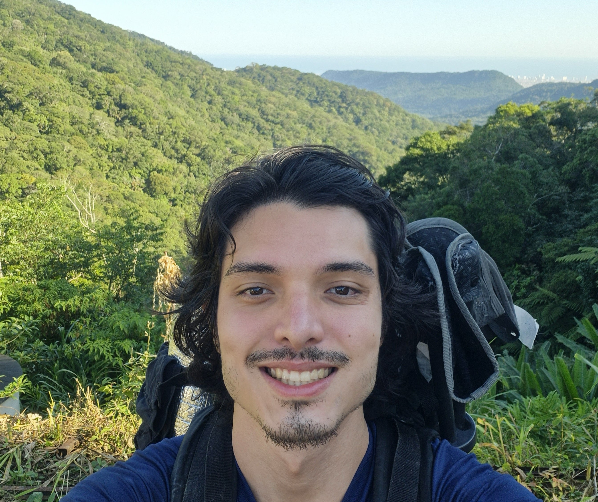

Meu nome é Caio Yamamoto
Sou geógrafo, educador e cartógrafo.

Meu nome é Caio Yamamoto
Sou geógrafo, educador e cartógrafo.

Soluções cartográficas sob medida para o seu negócio, pesquisa ou ambiente
Cartografia analítica de alto rigor técnico. Mapas temáticos e tratamento de dados espaciais para pesquisas, relatórios, prefeituras, ONGs e empresas. Ideal tanto para ilustrar as operações de sua empresa quanto para seu TCC, mestrado ou doutorado.
Dificuldade em encontrar dados para o seu projeto? Faço o levantamento, extração e limpeza de bases de dados espaciais para você ou sua equipe. Você receberá a informação tratada e estruturada no formato ou banco de dados da sua escolha, pronta para uso.
Peças únicas que unem precisão geográfica e design. Para comerciantes, um mapa personalizado é uma excelente ferramenta para destacar as vantagens da sua localização, mostrar pontos turísticos ao redor do seu hotel ou ilustrar rotas e áreas de atuação. Ideal para agregar valor à recepção de agências, restaurantes, pousadas ou como um presente corporativo inesquecível.
Enriqueça o material didático da sua escola com mapas desenvolvidos com intencionalidade pedagógica para a sala de aula. Realizo uma curadoria rigorosa das informações geográficas para focar apenas no que é essencial para cada momento do aprendizado. Produzo materiais que apoiam desde a alfabetização cartográfica - ensinando o aluno a ler mapas criticamente - até outras disciplinas escolares para contextualizar o conteúdo de aulas de História, Ciências, Português, etc.
Pensados para navegação. Como trilheiro inveterado, crio cartas de navegação e guias de trilhas para ecoturismo, com foco sempre em clareza, precisão e utilidade.
Transformo dados espaciais em narrativas visuais dinâmicas. Animações cartográficas perfeitas para documentários, redes sociais ou lançamentos imobiliários.
Para quem precisa de dinamismo. Desenvolvo mapas para web e narrativas espaciais perfeitas para roteiros, sites institucionais e visualização de dados.
Não encontrou exatamente o que procurava? Cada mapa é um projeto único. Me conte o que você precisa e vamos desenhar a melhor solução juntos.
O que eu uso para transformar seus dados em mapas
Escola Móbile é uma instituição reconhecida por seu sólido projeto pedagógico e pelo compromisso com a excelência acadêmica. Com foco na formação integral, o colégio promove um ambiente de aprendizagem dinâmico e engajado, buscando desenvolver não apenas o aprofundamento científico, mas também a autonomia, o pensamento crítico e as competências socioemocionais dos estudantes.
No Colégio, eu sou responsável, sob supervisão de professores titulares, por realizar intervenções/mediações pedagógicas em sala de aula, preparação de material didático, correção de atividades e provas, plantões de estudos focalizados, pelo acompanhamento e orientação de alunos de inclusão na realização de provas em salas de apoio, supervisão e monitoramento do comportamentos dos alunos em espaços coletivos da escola, dentre outras atividades.
Sob orientação do professor Roberto Rech, preparei sequências didáticas completas incluindo momentos expositivos e atividades para turmas de EJA. Além disso, participei de reuniões pedagógicas, contribuindo para a melhoria contínua do processo de ensino-aprendizagem.
No cargo de monitor do Laboratório de Geografia do Colégio Rainha da Paz, fui encarregado de elaborar e desenvolver projetos e atividades junto ao professor responsável e aos alunos. Além disso, dou suporte à área de Geografia do colégio através da contribuição em discussões de temas e práticas de ensino, da produção de materiais didáticos como mapas e apostilas e da concepção e assistência em trabalhos de campo.
O Laboratório desenvolve suas atividades dentro do Espaço Maker do colégio e compõe o Itinerário de Aprofundamento em Geografia proposto pelo Novo Ensino Médio. Tem como objetivo fazer os alunos refletirem a respeito do espaço e das paisagens circundantes a partir de uma postura ativa frente ao aprendizado, portanto os identificamos enquanto sujeitos ativos na construção dos saberes. Para tanto, estimulamos a capacidade criativa dos alunos e sua responsabilidade no desenvolvimento de pesquisas a partir de projetos em grupo concebidos coletivamente nos encontros iniciais.
A partir da consolidação de conceitos-chave da Geografia e da capacitação de ferramentas digitais como AutoCAD, Rhino7, QGIS, Photoshop e Adobe Premiere, o laboratório se propõe como uma espécie de “incubadora” dos interesses dos alunos e da prática de pesquisa, com cada grupo de alunos participando de projetos independentes.
Ao longo dos encontros tive a oportunidade de contribuir ativamente na elaboração, na concepção e no acompanhamento de diferentes projetos, alguns dos quais expressei profunda autoralidade. Nossos esforços resultaram até então na produção de mapas e vídeos, na construção de maquetes, na elaboração de sequência didáticas pelos próprios alunos e muito mais.
Em 2023 fomos agraciados pela aprovação do nosso projeto no concurso GeoSampa Aberto, um evento que selecionou 15 dos melhores projetos desenvolvidos com dados do GeoSampa. Com isso, tivemos a oportunidade de apresentar nosso trabalho na biblioteca Mário de Andrade em um evento organizado pela SMUL/SP.
Indicado à bolsa de Treinamento Técnico (TT1) da FAPESP para o projeto “Pauliceia 2.0: mapeamento colaborativo da História de São Paulo (1870-1940) - fase 2”, orientado pelo professor doutor Luis Antonio Coelho Ferla. O projeto, composto por uma equipe interdisciplinar de historiadores e cientistas da computação da UNIFESP, do ITA, da Emory University, da USP e de outras instituições, prevê o desenvolvimento e a disponibilização na rede mundial de computadores de uma base cartográfica digital histórica da cidade de São Paulo, referente ao período de sua modernização urbano-industrial (1870-1940), associada a uma interface que permita a interatividade de pesquisadores interessados, de forma a que estes possam alimentar a base disponibilizada com eventos espacializáveis de suas próprias investigações. Optei por contribuir voluntariamente com o projeto.
Para o desenvolvimento deste projeto estou entrando em contato ou aprofundando meus conhecimentos nas seguintes ferramentas ou linguagens:
Estruturação e organização de dados para apoiar a elaboração das análises de mercado e construção de banco de dados a partir de dados secundários de fontes oficiais como IBGE, ministérios, prefeituras, entre outros;
Levantamento de dados primários para construção de bancos de dados gerais e específicos, através de levantamentos pela internet e telefone;
Geoespacialização de dados gerados a partir das pesquisas primárias e secundárias e geração de mapas temáticos e analíticos em apoio às análises mercadológicas.
Como consta na descrição da página oficial do programa, "O PIBID é um programa governamental brasileiro que oferece bolsas de iniciação à docência a estudantes de licenciatura, visando aproximar a formação de professores da prática nas escolas de educação básica. Ele também envolve coordenadores e supervisores e tem como objetivo melhorar a qualidade da educação por meio da experiência prática na formação de futuros professores."
As atividades que desenvolvi no Núcleo de Acervo Cartográfico do Arquivo Público do Estado de São Paulo incluem a catalogação, monitoramento, digitalização e gestão dos documentos cartográficos do acervo histórico, troca de acondicionamento, indexação em banco de dados e auxílio aos consulentes. Também participei de palestras sobre arquivologia e preservação do patrimônio histórico, com ênfase em documentos cartográficos.
Realizei centenas de entrevistas para o Censo Demográfico de 2022 e planejei a abordagem adequada às diferentes circunstâncias domiciliares dos setores censitários que me foram designados. Estabeleci contato com moradores, síndicos e condôminos.
Exerci a função de atendente de vendas e operador de caixa na Livraria do Espaço dentro do Espaço Itaú Cultural Augusta. Durante este trabalho temporário contribuí para a catalogação de novos livros, atualizei os preços dos livros no sistema, auxiliei no controle de estoque, realizei procedimentos referentes aos contratos consignados com as editoras, operei o caixa, realizei faxina e auxiliei os clientes em eventuais dúvidas. No entanto, as discussões sobre literatura e cinema constituiu a maior riqueza desta experiência
+55 11 93152-6128
caioyamamotolellis@usp.br
São Paulo, São Paulo, Brasil